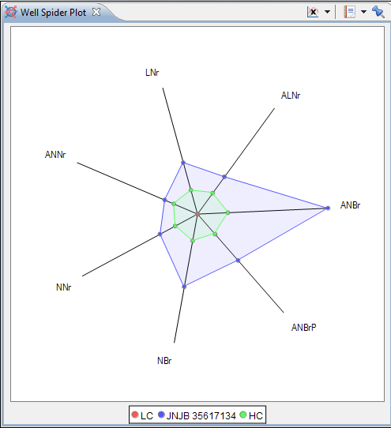

The Well Spider Plot is a graphical method to display multivariate data in a two-dimensional chart. All the selected features are star-shaped and originate from a central point. The different well types (LC, HC, etc.) are shown in different colors and are spun between the different features.
This plot allows you to easily spot similar observations or outliers.
